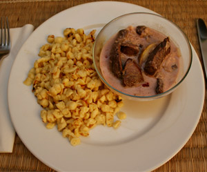

Hirschgeschnetzeltes an Apfel-Preiselbeer-Sauce
5 von 6500 gr Hirschschnitzel quer zur Faser in Streifen schneiden. 2 Äpfel halbieren, entkernen und in Schnitze schneiden. 1 Zwiebel hacken. Fleisch mit Salz und Pfeffer würzen. 34 Minuten in Ölbraten. Herausnehmen und mit Alufolie zudecken. Äpfel und Zwiebel andünsten. Mit 1.5 dl Apfelsaft ablöschen und etwas einkochen lassen. 1.5 dl Sauerrahm beigeben und 5 Minuten köcheln lassen. 2 EL Preiselbeeren und Fleisch samt Saft beigeben. Mit Salz und Pfeffer abschmecken. Sofort servieren.
